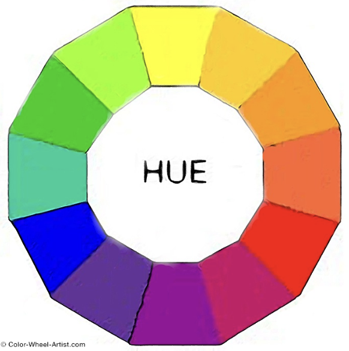
Basics of Graphics
Thursday, April 10
Today we will…
- New Material
- What makes a good graphic?
- Color
- Lab 2: Exploring Rodents with ggplot2
Lab 1 Notes
- Overall looking nice!
- make sure your code is visible:
echo: true - see what your rendered document looks like before you submit it
- if you have questions about statistical interpretations, just ask!
Graphics
Graphics consist of:
Structure: boxplot, scatterplot, etc.
Aesthetics: features such as color, shape, and size that map other variables to structural features.
Both the structure and aesthetics should help viewers interpret the information.
What makes bad graphics bad?
- BAD DATA.
- Too much “chartjunk” – superfluous details (Tufte).
- Design choices that are difficult for the human brain to process, including:
- Colors
- Orientation
- Organization
What makes good graphics good?
Edward R. Tufte is a well-known critic of visualizations, and his definition of graphical excellence consists of:
- communicating complex ideas with clarity, precision, and efficiency.
- maximizing the data-to-ink ratio.
- using multivariate displays.
- telling the truth about the data.
Graphics
- When creating graphics, we need to think carefully about how we make structural and aesthetic decisions.
- This takes iteration and practice!
Lessons from Visual Perception
Gestalt Principles
Our brains have an amazing ability to create and perceive structure among visual objects.
- “Gestalt principles of visual perception”
- This framework can help us think about how to create the most expressive and effective data visualizations
Gestalt Principles
| Gestalt Hierarchy | Graphical Feature |
|---|---|
| 1. Enclosure | Facets |
| 2. Connection | Lines |
| 3. Proximitiy | White Space |
| 4. Similarity | Color/Shape |
Implications for practice:
- Know that we perceive some groups before others.
- Design to facilitate and emphasize the most important comparisons.
Pre-attentive Features
The next slide will have one point that is not like the others.
Raise your hand when you notice it.
Pre-attentive Features
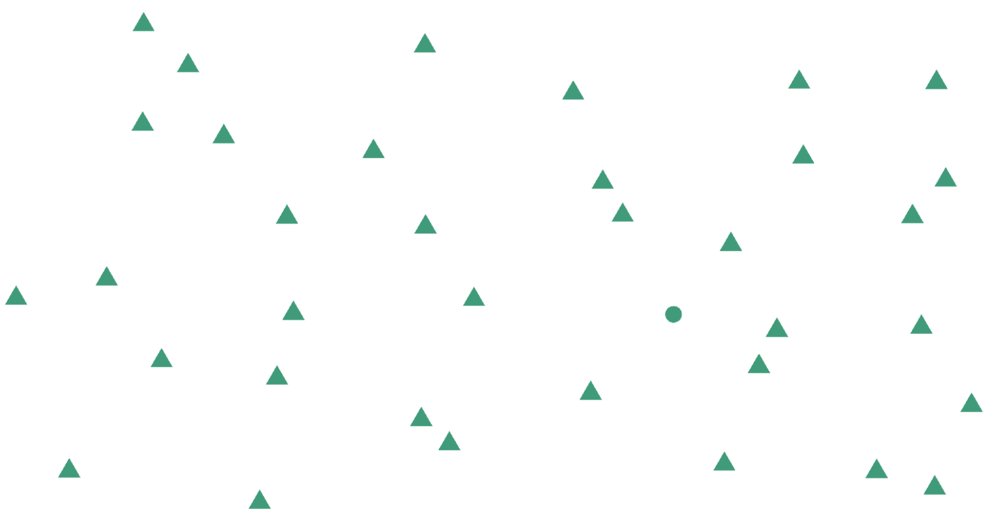Pre-attentive Features
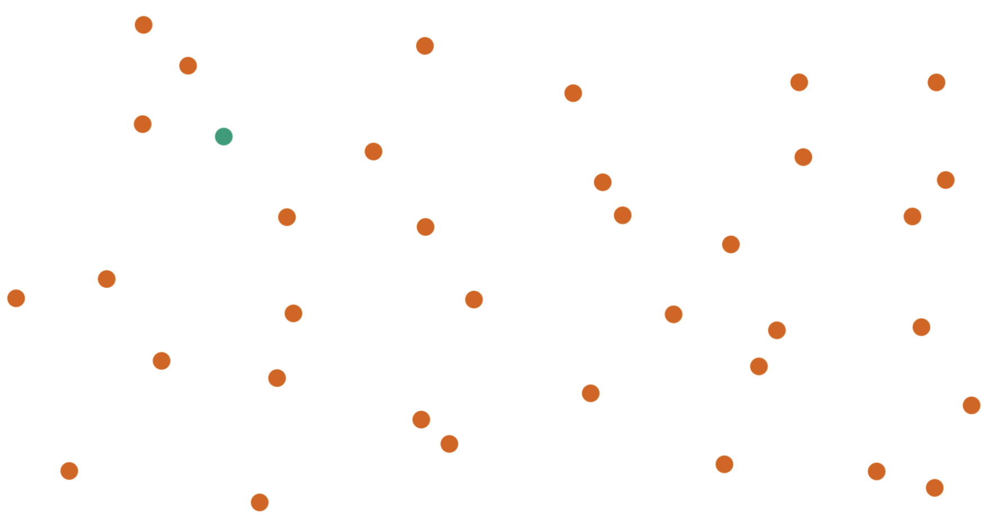Pre-attentive Features
Pre-attentive features are features that we see and perceive before we even think about it.
They will jump out at us in less than 250 ms.
E.g., color, form, movement, spatial location.
There is a hierarchy of features:
- Color is stronger than shape.
- Combinations of pre-attentive features may not be pre-attentive due to interference.
Double Encoding
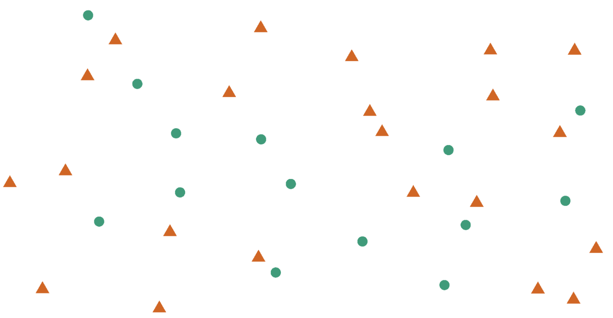No Double Encoding
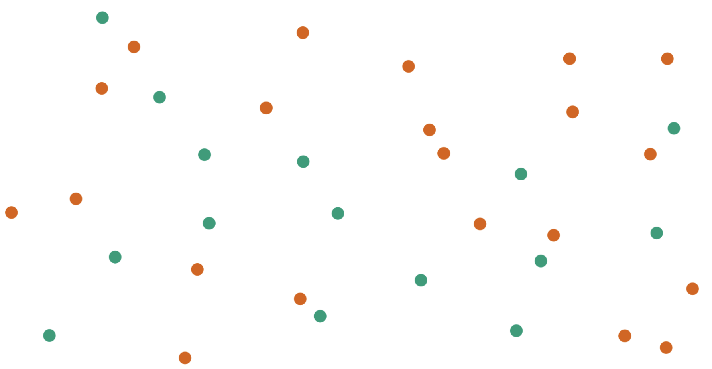Color
Color
- Color, hue, and intensity are pre-attentive features, and bigger contrasts lead to faster detection.
- Hue: main color family (red, orange, yellow…)
- Intensity: amount of color
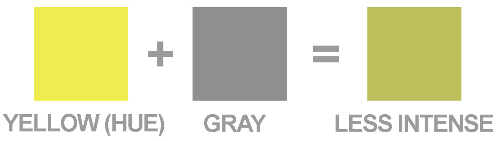
Color Guidelines
Do not use rainbow color gradients!
Be conscious of what certain colors “mean”.
- Good idea to use red for “good” and green for “bad”?
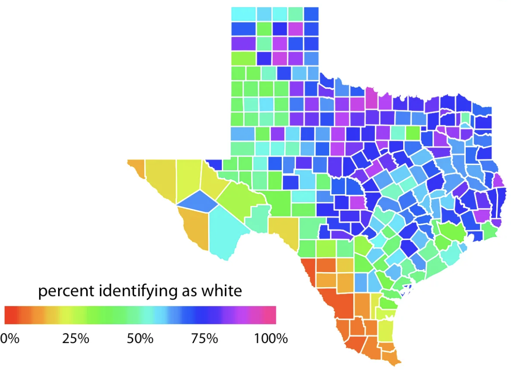
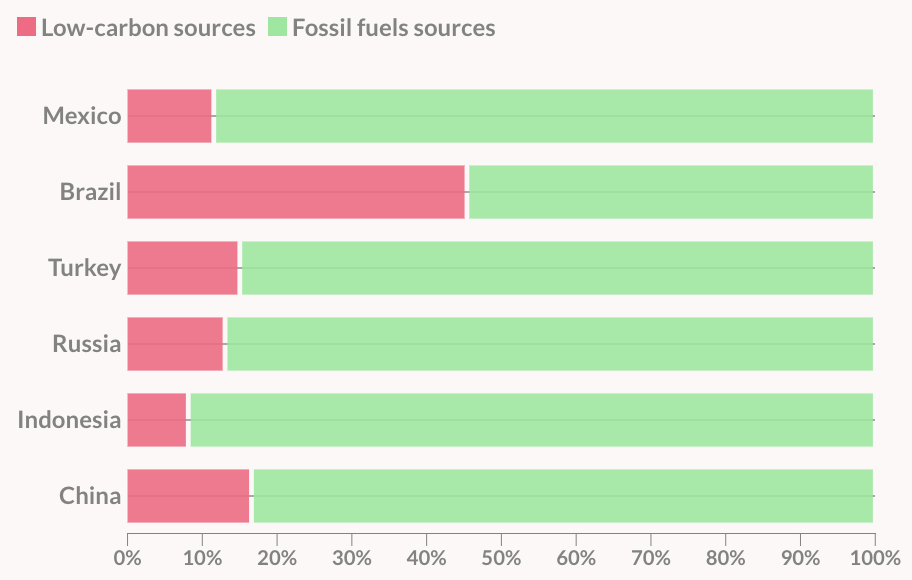
Color Guidelines
- For categorical data, try not to use more than 7 colors:
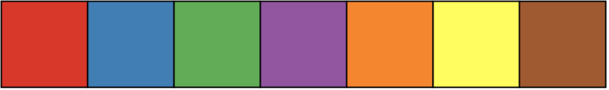
Can use colorRampPalette() from the RColorBrewer package to produce larger palettes:
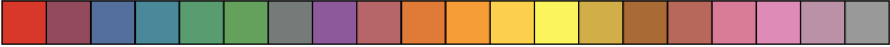
Color Guidelines
- For quantitative data, use mappings from data to color that are numerically and perceptually uniform.
- Relative discriminability of two colors should be proportional to the difference between the corresponding data values.
Color Guidelines
To colorblind-proof a graphic…
- use double encoding - when you use color, also use another aesthetic (line type, shape, etc.).
Color Guidelines
To colorblind-proof a graphic…
- with a unidirectional scale (e.g., all + values), use a monochromatic color gradient.
- with a bidirectional scale (e.g., + and - values), use a purple-white-orange color gradient. Transition through white!
Color Guidelines
To colorblind-proof a graphic…
- print your chart out in black and white – if you can still read it, it will be safe for all users.
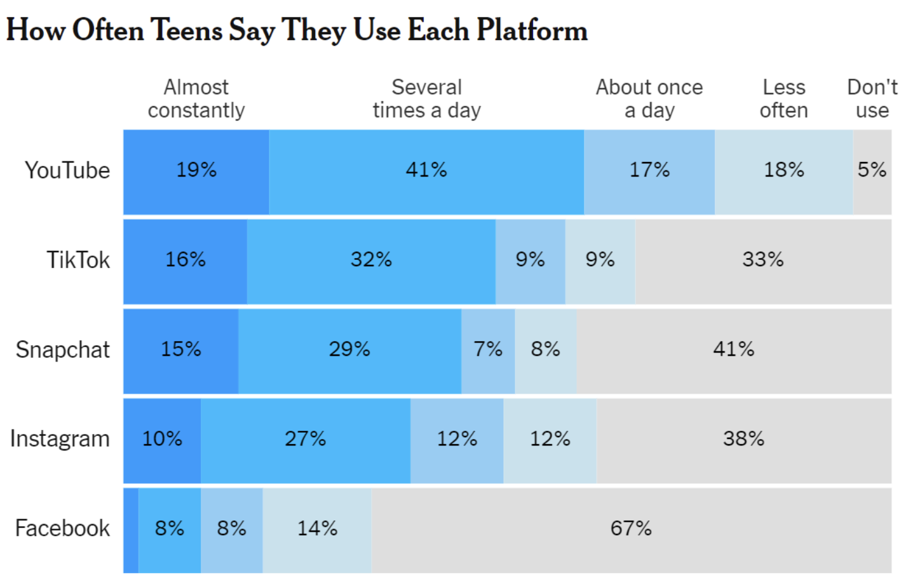
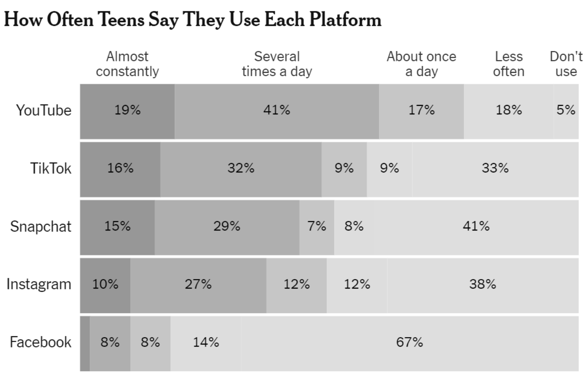
Color in ggplot2
There are several packages with color scheme options:
- Rcolorbrewer
- ggsci
- viridis
- wesanderson
These packages have color palettes that are aesthetically pleasing and, in many cases, colorblind friendly.
You can also take a look at other ways to find nice color palettes. ColorBrewer is my personal favorite.
Let’s Practice
Penguins - Flipper Length by Species
Penguins - Flipper Length by Species & Sex
PA 2 Example - Two Categorical Variables
Lecture Example - Texas Housing Data
What Do You Think About This Graphic?
Example 1
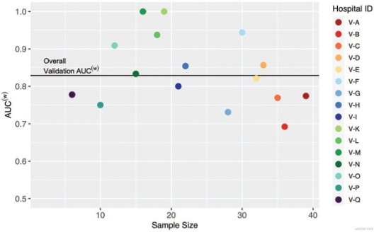Example 2

https://www.data-to-viz.com/graph/area.html
Example 3

https://r-graph-gallery.com/web-vertical-line-chart-with-ggplot2.html
Example 4

https://r-graph-gallery.com/web-line-chart-with-labels-at-end-of-line.html
Lab 2: Exploring Rodents with ggplot2

Lab Formatting
Starting with Lab 2, your labs will be graded more strictly on appearance and code format.
Review the lab formatting guidelines on Canvas before you submit your lab!
Big points:
- use relative file paths
- make sure all markdown renders as expected
- NEVER PRINT OUT FULL DATASETS
- no long code lines - use line breaks liberally
- “clean up” the lab before submitting
ggplot2 cheatsheet

To do…
- Lab 2: Exploring Rodents with ggplot2
- due Monday 4/14 at 11:59pm
- Read Chapter 3: Data Cleaning and Manipulation
- Check-in 3.1 due Tuesday 4/15 before class